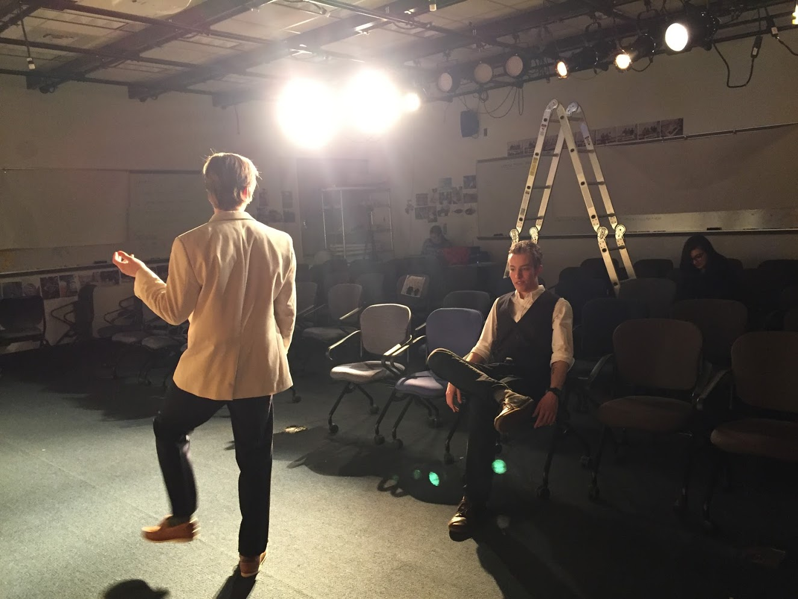
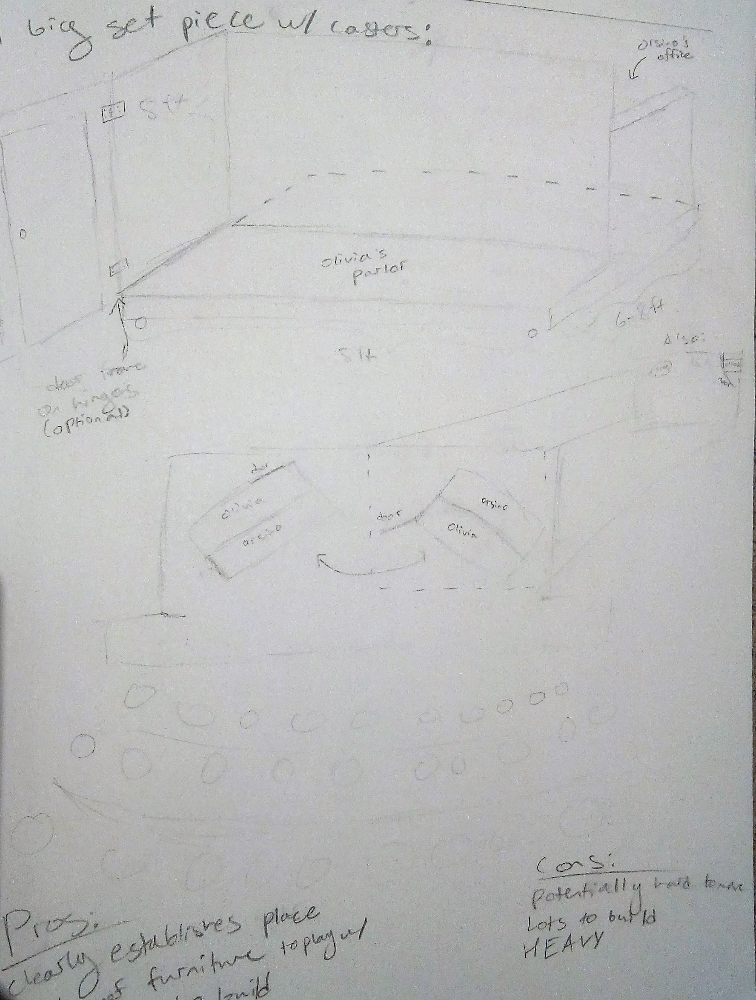
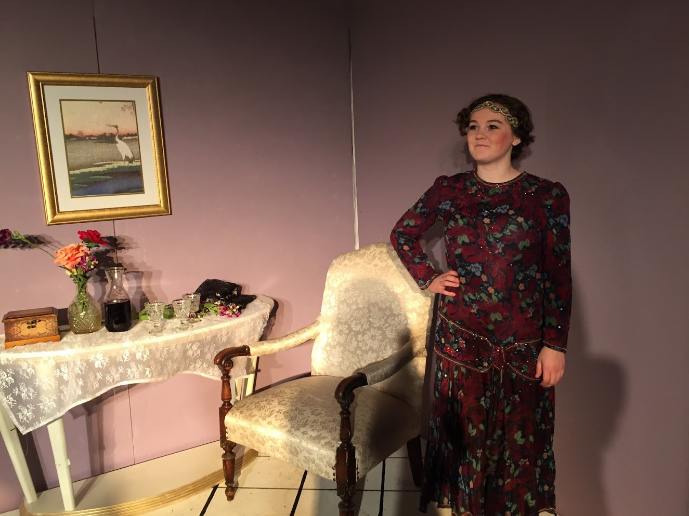
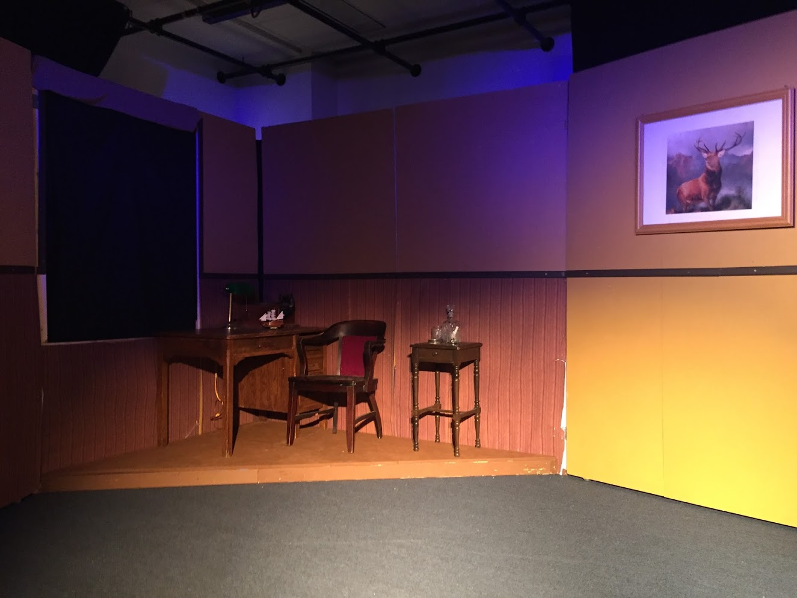

Twelfth Night Technical Design

Olin is a small school, with no stage, which makes doing theatre on campus difficult. There is a single classroom with a grid on the ceiling to hang lights, which is where we held our 2016 production of Shakespeare's Twelfth Night. This was my first show as technical director, in charge of every aspect of show design other than what the actors were doing. The director wanted to situate the show's aesthetic in the roaring 20s, and I agreed. It was an opportunity to focus on a particular interpretation of the plot of Twelfth Night - how powerful people (Orsino and Olivia), bend the world to their ideals, and the adverse effects their dominance has on others. We also wanted to call attention the deception and doubletalk that happens throughout the show. These ideas, the effects of powerful people and their duplicity, informed the choice of 20s setting, a time period infamous for its active underworld society. It also informed the set design.
To represent the two warring households, I designed two opposing houses for the set. Each one also had to have to option to transform to a "concealed" state, to highlight the deception present. We also had to have easily movable pieces, because we were sharing the room with classes up until the very day of show. The first design featured a rolling platform with one house on each side, that could be turned for the concealing effect, and made obvious the parallels between the two households. However, for the final design, we chose instead to seperate the houses to either side of stage. Each one was a single triangular platform with rolling "doors" that folded over the long end and concealed the room when it wasn't being used as playing space, and opened to provide additional scenery when it was.
The two houses were decorated in 20s style and highlighted the differences between their residents, who were otherwise equated by the physical design. Regal and feminine Olivia had lilac walls with gold trim in house's interior, and white ivy-clad columns on the outside. Melancholy and bullish Orsino got mustard walls and hunting decorations for his interior, and brick exterior walls.